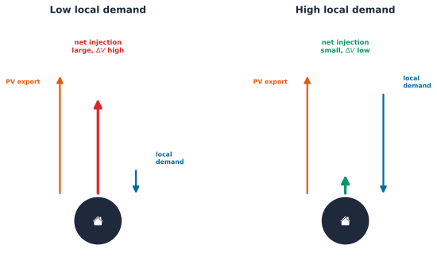

load_data: (342, 365, 48) (customers, days, half-hours){'converged': True,
'n_buses': 61,
'n_lines': 59,
'n_loads': 31,
'n_transformers': 1,
'total_p_loss_kw': 0.6107992120127365,
'total_q_loss_kvar': 0.15519491021295995}Part 4 Chapter 2 already ran a real hosting-capacity study on this exact 342-customer AusNet feeder: sweep Photovoltaic (PV) penetration from 0 to 100%, watch the worst-case voltage climb, find the level where it first breaches 1.10 pu. That study is genuinely useful, and it has one real limitation, stated plainly rather than glossed over: every load in it comes from a day that already happened, replayed from the historical record. A Distribution System Operator (DSO) planning for next year’s PV applications cannot replay next year’s load; the only thing it can do is forecast it.
This chapter closes that gap directly, and it is deliberately integration work, not a new open question. Every mechanism it needs already exists and is already validated: Part 4’s own Circuit handle on the OpenDSS network, its own rule-based Volt-Watt and Volt-VAr mitigation levers, and Part 8 Chapter 4’s own zero-shot Chronos-2 forecast, which needs no fitting step on this population at all. The real, checkable question is narrower and more useful than “does the network model work”: does trusting a forecast, instead of a historical replay, change the answer to a real operational question a DSO actually asks?
Two chained questions structure what follows:
build_ausnet_network() below is byte-for-byte the same function Part 4 Chapter 2 built: the same LVcircuit-master.txt, the same 31 real customer loads, the same 500 kVA transformer.
load_data: (342, 365, 48) (customers, days, half-hours){'converged': True,
'n_buses': 61,
'n_lines': 59,
'n_loads': 31,
'n_transformers': 1,
'total_p_loss_kw': 0.6107992120127365,
'total_q_loss_kvar': 0.15519491021295995}Chapter 4’s own Chronos-2, recomputed exactly as that chapter built it, zero-shot, no fitting step on this data. Each customer’s own day 362 becomes the context window; day 363, the same sunniest real day Part 4 Chapter 2’s own hosting-capacity study already uses, becomes the forecast target. A single forecast call hands back two real scenarios worth keeping separate: the point forecast, and the 0.95 quantile, an upper-demand scenario that sounds like the natural worst case to plan against.
zero-shot point forecast, day 363, population MAE: 0.2135
P95 scenario sits above the point forecast by, on average, 0.8714 kW per half-hourReusing Part 4 Chapter 2’s own run_penetration almost entirely as written. The one change: instead of indexing a fixed historical day out of load_data, run_scenario takes a load_source array directly, one row per customer, so the exact same customer-to-PV assignment, PV profile, reactive-power synthesis, and mitigation-control logic runs unchanged against a historical, point-forecast, or upper-quantile load.
Same network, same PV penetration sweep, same customer-to-PV assignment (same random seed across scenarios), so any difference below comes from the load source alone.
| scenario | Historical replay | Zero-shot P95 stress | Zero-shot point forecast |
|---|---|---|---|
| penetration | |||
| 0 | 1.0823 | 1.0820 | 1.0823 |
| 20 | 1.0876 | 1.0859 | 1.0878 |
| 40 | 1.0956 | 1.0940 | 1.0959 |
| 60 | 1.0973 | 1.0929 | 1.0966 |
| 80 | 1.1047 | 1.1005 | 1.1040 |
| 100 | 1.1046 | 1.1004 | 1.1039 |
| At What PV Penetration Does This Feeder First Breach 1.10 pu? | |
| Scenario | First breach at penetration |
|---|---|
| Historical replay | 80 |
| Zero-shot point forecast | 80 |
| Zero-shot P95 stress | 80 |
| Day 363, the sunniest real day, same customer-to-PV assignment across scenarios | |
All three scenarios first breach 1.10 pu at the same 80% penetration level here. The forecast does not move this particular answer, a real, checked result rather than an assumed one, and worth reporting exactly as found: a genuine generalization check does not get to pick the more dramatic-sounding outcome after the fact.
A second, more useful finding sits underneath that headline number. “P95” sounds like it should mean worse, for every constraint, at every penetration level. Checked directly against transformer utilization, not assumed, it does not.
| scenario | Historical replay | Zero-shot P95 stress | Zero-shot point forecast |
|---|---|---|---|
| penetration | |||
| 0 | 4.00 | 9.30 | 2.81 |
| 20 | 4.01 | 9.11 | 3.87 |
| 40 | 10.03 | 8.92 | 9.90 |
| 60 | 16.88 | 11.64 | 16.75 |
| 80 | 22.82 | 17.62 | 22.69 |
| 100 | 28.67 | 23.40 | 28.53 |
No, and the real reason is physical, not statistical. At low PV penetration the transformer’s own throughput is mostly driven by load itself, so the upper-demand scenario does raise utilization, exactly what “P95 means worse” assumes: 9.30% against 2.81-4.01% at 0-20% penetration. Past roughly 40% penetration, that reverses: a customer with higher local demand consumes more of their own PV export before it ever reaches the transformer, so higher demand lowers both transformer utilization and worst-case voltage, 17.62% against 22.69-22.82% at 80% penetration. This is the same real compensatory mechanism Part 8 Chapter 1 already found between PV and Electric Vehicle (EV) activity [1], now showing up between forecast demand and PV export instead.
Key Concept
Voltage rise from PV export is not a function of a customer’s own PV output alone; it depends on the net injection at that customer’s own bus, generation minus local demand. The linearized branch-flow approximation Baran and Wu introduced for radial distribution networks [2] makes this precise, the standard explanatory lens for this mechanism, not the literal equation the OpenDSS solve above performs, which is a full nonlinear AC power flow. For a bus \(i\) with resistance \(R_i\) and reactance \(X_i\) back to the source: \[ \Delta V_i \approx \frac{R_i P_{net,i} + X_i Q_{net,i}}{V_{nominal}} \] \[ P_{net,i} = P_{PV,i} - P_{load,i} \] Two customers with identical PV systems can see very different voltage rises purely because their own local demand differs. A customer whose demand nearly matches their PV export has \(P_{net,i} \approx 0\) and barely moves the local voltage; the same PV output with little local demand pushes nearly the full output onto the network as \(P_{net,i}\), and \(\Delta V_i\) rises accordingly. A forecast’s upper-demand scenario raises \(P_{load,i}\), which lowers \(P_{net,i}\) for a fixed PV export, which lowers \(\Delta V_i\): the opposite of what “higher demand means worse” naively expects, once real PV export is actually on the feeder.

A DSO that reflexively treats a forecast’s upper quantile as the universal worst case for every constraint gets this backwards at high PV penetration; which quantile is actually the risk depends on which constraint, and how much PV is already on the feeder, not on “higher demand” as a blanket rule.
Because the upper quantile is not automatically the worst case, this section identifies the actual worst-case load source at the shared 80% breach penetration, historical replay, marginally the highest of the three at 1.1047 pu, rather than assuming it is the upper-quantile scenario in advance. Part 4 Chapter 2’s own two real inverter-control levers, Volt-Watt and Volt-VAr, apply unchanged.
| Does Volt-Watt or Volt-VAr Fix the Real Worst Case? | ||
| Control | vmax_pu | Still breaching 1.10 pu |
|---|---|---|
| No control | 1.1047 | True |
| Volt-Watt | 1.0878 | False |
| Volt-VAr | 1.071 | False |
| PV penetration 80%, historical replay load, day 363 | ||
Both levers fix the real worst case: Volt-Watt brings the feeder to 1.0878 pu, Volt-VAr further still to 1.0710 pu, both back under the 1.10 pu limit with no new customer, no new equipment, no change to the PV penetration level itself. The same real finding Part 4 Chapter 2 already reported, now confirmed against a forecast-identified worst case rather than only a historical one.
Two real, checked answers, not one assumed going in. First: at least on this feeder, on this day, trusting a zero-shot forecast instead of a historical replay does not change which PV penetration level first breaches the feeder’s own voltage limit, a genuine reassurance that Part 4’s own hosting-capacity conclusion is not an artifact of using historical rather than forecasted load. Second, and more useful precisely because it was not the expected answer: a forecast’s upper quantile is not a universal worst case. It raises transformer utilization at low PV penetration and lowers both utilization and worst-case voltage at high penetration, because higher local demand increasingly offsets PV export as penetration grows. A DSO building a what-if analysis around “always plan for the P95 scenario” would get this backwards on a feeder with real PV adoption, exactly the kind of assumption this book’s own discipline exists to check rather than take for granted.
One real scope limit, disclosed rather than hidden. The author’s own resources/cvar_flexibility work explores a further angle, an optimal customer-flexibility dispatch under a Conditional Value-at-Risk (CVaR) risk objective, using a forecast’s own uncertainty as the risk input directly rather than only checking a fixed set of scenarios against it. That formulation is not yet vendored in this book’s own copy of that work, and no equivalent public methodology could be confirmed against this dataset within this chapter’s own scope. Rather than force an unverified optimization into print, this chapter stops at the scenario-comparison result above; a CVaR-based dispatch chapter remains a real, open extension, not a solved one.
Chapter 4 checked whether a zero-shot forecast fails on the same customers a trained model does. This chapter checked something a point-accuracy number alone cannot answer: whether that same forecast, put to a real network-planning use, changes a real operational decision. It mostly does not move the headline breach point here, and it meaningfully complicates the naive “upper quantile is always worse” assumption a what-if analysis might otherwise lean on unchecked. Chapter 6 turns to a different real gap this chapter’s own full-network solve papers over: most real feeders have no such visibility below the substation at all, and checks whether smart-meter readings can genuinely fill that in.